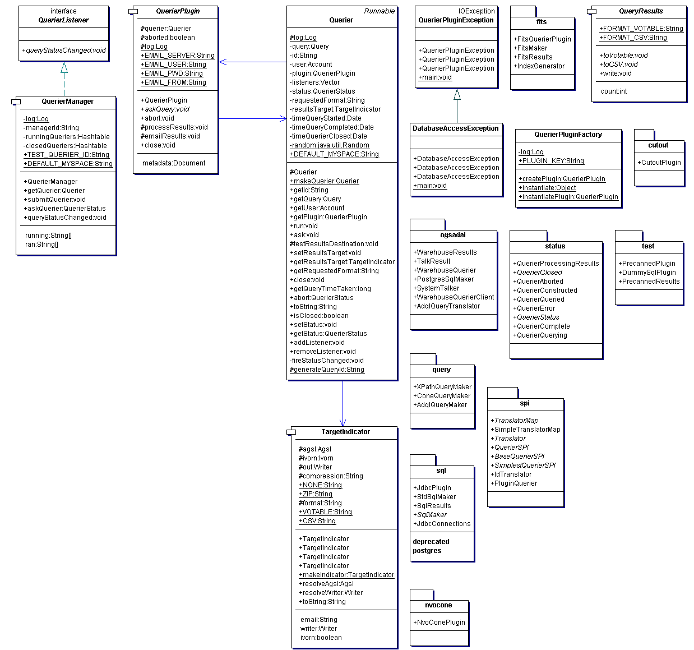

Class Diagram
queriers
package:
org.astrogrid.datacenter.queriers

Package Nodes
cutout
fits
nvocone
ogsadai
query
spi
sql
status
test
Class Nodes
DatabaseAccessException
Querier
QuerierManager
QuerierPlugin
QuerierPluginException
QuerierPluginFactory
QueryResults
TargetIndicator
Interface Nodes
QuerierListener
Package Node Detail
Package
org.astrogrid.datacenter.queriers.status
Package
org.astrogrid.datacenter.queriers.cutout
Package
org.astrogrid.datacenter.queriers.test
Package
org.astrogrid.datacenter.queriers.spi
Package
org.astrogrid.datacenter.queriers.fits
Package
org.astrogrid.datacenter.queriers.query
Package
org.astrogrid.datacenter.queriers.ogsadai
Package
org.astrogrid.datacenter.queriers.nvocone
Package
org.astrogrid.datacenter.queriers.sql
 Class Diagram queriers
Class Diagram queriers